パース法習得に向けてまずやるべきことは、数多くあるパースの作画の方式を一つのパターンに絞ることです。その一つを深く理解し、より実用的にアレンジすることで使い慣れた「道具」という位置づけをします。そうでないと、この次に考える予定のシチュエーションごとのパースの作画への応用がおぼつかないことになります。というわけで、今回はパースの作画の手順の一つ一つの根拠を理解しながら、臨機応変に使える「絵を描くためのパース法」を作ろうと思います。
前回のパース理論の予備知識の記事ではパース法の予備知識として、基礎技法や歴史について学びました。そういった原始的なパース理論も、お絵描きパースを理解する上で結構役に立つので頭に入れておくと良いと思います。では具体的に「絵を描くためのパース法」とはどういうものを言っているのかというと、それは、完成予想図に近いパース線を描くこと、機械的でなく画面サイズや構図の違いに対応できること、シンプルにまとまっていて使いやすいことという項目をクリアしている描き方ということになります。そういったものを考案するには、やはり根底にある基礎理論を無視することは出来ません。なので、どう考えてもお絵描きでは使えないだろうという作図法もしっかりと理解し、なぜこの描き方では遠近感が保証されているのかということを知っておきましょう。
- 参考文献
- 『パース！ マンガでわかる遠近法』／デヴィッド・チェルシー著／みつじまちこ訳
- 『リアルなキャラクターを描くためのデッサン講座』／西澤晋
ここで使用した参考文献は主に『パース！』です。過去に『スーパーパースデッサン』を読んだことがあるのですが、内容は基本的なことばかりであまり役に立たなかったので、もっと理論的に煮詰めた教本、それも建築パースでなく絵を描くことを目的とした内容のものは無いかと探し『パース！』に落ち着いた分けです。が、この本がまた厄介で、分かりやすくする為に漫画という体裁を取っているのに、漫画が活躍するのは茶番の部分ばかりで、肝心の作画の説明の部分はハッキリ言って理論書の挿絵と大差ない感じです。むしろキャラクターが前に立って邪魔です。さらに、原文が悪いのか翻訳が悪いのか、文章に主語がなかったり、手順を説明するところで発言が重複して混乱を誘ったり、分からせようという意思の感じられない言い捨てたような意味不明の言い回しがあったり。この本を読んでいるときは何やら暗号解読をしている気分でした。ただ、言っておきますが必要なパース法の知識は一通り書かれていました。他の著書と読み比べてないので知りませんが、この著者自身が「他の本で教えない部分をこの本は説明するよ」と書くくらい丁寧に書かれているのでしょう。あまりオススメ出来ませんが他にないならこの本を手に取るしかないかな、という感じですかね。ただ本というのは、自分が何を学ぶべきかという道しるべを順序よく構成してくれているので、その分野を一通り学びたいというときには、何と何が関係しているか分からないという独学にありがちな情報迷子にならずに済むので価値はあります。


『リアルなキャラクターを描くためのデッサン講座』は人物デッサンの本ですが、後半1/3くらいはパースのことに触れています。しかも、パース法の基礎は割愛し、見栄えの良くなる画面内のレイアウトの話からいきなり始まります。つまりパース法についてというよりは画面内の「演出」に触れた内容ということです。特にカメラレンズの画角の選択について詳しく解説されていて、初めて読んだときは楽しくて仕様がありませんでした。著者がアニメーターなので映画的な映像演出の観点でパースの決め方を教えてくれるオススメの本です。特に望遠レンズの絵について知りたいなら必読です。ただしパース法の基礎は習得しているものとして話が進むので注意。


透視図法と作画方法によるパース法の分類
それでは、まず透視図法の種類と作図法の種類を列挙し、それぞれの組合せはどのような使い方があるかを把握しておこうと思います。こうして敵軍の編成を知っておかないと、漠然と何点透視図法だの作図法だのを覚えても混乱したり覚えきれなかったりするのが目に見えています。初期段階で細かい部分を定義して体系的に考えていくのが『お絵描きホーホー論』の方針です。
ここでは各透視図法の違いを「消失点の数」ではなく「原寸で描かれる部分の種類」で考えています。前者の「消失点の数」で判断するのも正解ではあるのですが、消失点の数なんかはパッと見で分かりますし、何より意味が薄いです。消失点の数が意味するところは「アイレベル上にある奥行きが収束する点」というくらいで、作画するという目的においてはあまり役に立たない情報です。そこで、消失点は「何の」奥行きが収束する点なのかを考えると、「原寸になる部分からの奥行き」ということになり、それは作画に直接関係します。そもそも「消失点の数」は「原寸になる部分の種類」に応じて変化するので、こちらの考え方が作画という目的とセットで各種透視図法を扱うにはあつらえ向きということです。
もっと言えば、立体を正面から見た四本の辺からなる「面」が原寸となるときは、水平方向、垂直方向ともに平行線なので収束する点は存在せず、必然的に奥行き方向の消失点の一点のみとなります。立体の手前の辺の高さという「線」が原寸となるときは、まずはそれを基準に側面の奥行きの方向を決めるために左右に消失点が必要となります。一番手前の頂点という「点」のみが原寸となるときは、立体の縦横高さ方向全てに奥行きがあって原寸となる部分がないということなので、それを基準に各面の奥行きの方向を決めるために三つの消失点が必要になります。というわけで各透視図法の種類の特徴は、一点透視図法は正面図の四本の辺から、二点透視図法は立体の一番手前の高さの辺から、三点透視図法は立体の一番手前の頂点から消失点に収束するもの、ということができます。ちなみにこの原寸となる部分というものは重要で、任意の位置や大きさで絵を描きたいというときにアタリ線として真っ先に描く部分になることが多いです。
また、ここでは作図法についても触れていますが、描き方手順を詳しく説明するのは後からになります。簡単に紹介すると、「透視図法の種類」が見え方に違いを持たらすものだとしたら、「作図法の種類」はその名の通り描き方に違いを持たらすものです。それぞれの描き方は得意分野も手順も異なるので、透視図法とは別々にして考える方が良いと思いました。細かいことを言うと他にも多くの作図法はあるとは思いますが、実用的な範囲で調べた限りではここで挙げたものだけで十分と考えました。以下の表は、この記事で扱うパース法の組合せの関係を把握しやすいようにまとめたものですが、ここではまだ覚えなくても問題ないです。この後の説明ではこの表を参考に話を進めますので、都度確認に戻ってくれば良いです。
|
一点透視図法 |
二点透視図法 |
三点透視図法 |
特徴・用法 |
| 消失点法 |
奥行きの方向 |
四角形の角度 |
立体の角度 |
パースに沿った作図はできるが、寸法の基準となるものが無ければ正確な正方形や立方体は描けない。 |
| 対角消失点法 |
立方体の底面の奥行きの寸法 |
立方体の底面の奥の頂点の位置 |
（二点透視の応用） |
正方形の対角線は45°であるという法則を利用し、正方形の底面を描くときに対角消失点を基準とする。一点透視は正面図の幅を基準に奥行きの寸法も正確に描けるが、二点透視では底面の縦、横のいずれかに寸法の基準になるものが無いければ正方形や立方体の奥行きの寸法を正確に描けない。 |
| M点法 |
奥行きの寸法 |
様々なパースのついた寸法 |
（二点透視の応用） |
作図により測定点を求めて、その測定点と、奥行き寸法を測りたい原寸を基準にして水平方向にパースのついた奥行き方向の寸法を正確に描ける。寸法を測りたい部分ごとに個別にM点が必要になるので効率は良くない。 |
| 介線法 |
- |
立方体の側面の奥行き |
（二点透視の応用） |
立体の側面方向に正方形の対角消失点を作図し、側面に正方形を描くときの基準とする。正確な正方形を描くためには、側面方向の正確な45°方向を知る為に、まずはMPを作図しておく必要がある。長所として、側面の対角消失点の位置関係を縮小できるため、消失点が画面外にあるときでも画面内に収まるサイズに縮小して作図できる。 |
| 特徴 |
正面図が原寸 |
立体の手前の高さが原寸 |
立体の手前の頂点が視心 |
- |
各透視図法と各作図法の組合せ・それが得意とする作図カ所
建築パース作画の手順
ではこの表の組合せに沿って、一通りの作図手順について説明していきます。下図の「足線法の見方」は建築パースの作図の基本形の説明と、分かりにくい部分のための図解です。残りの図解は各種作図法の実演です。ここで「レベル法」と呼んでいるのは、建築パースの基本形の上面図と側面図を水平線で繋いで作図するので、勝手に名付けた呼び方なのでご了承ください。ちなみに
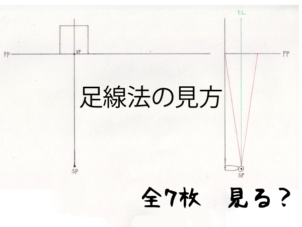
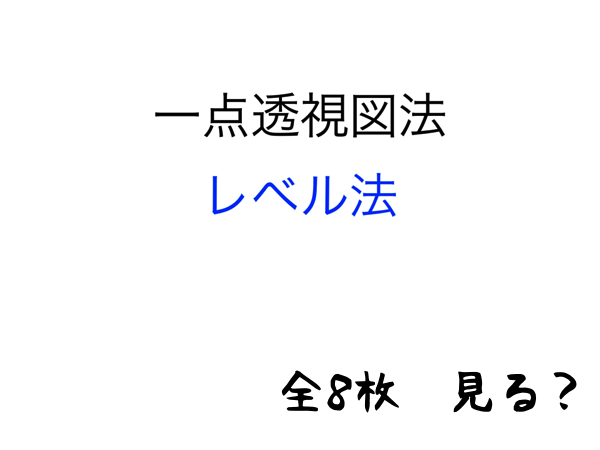

 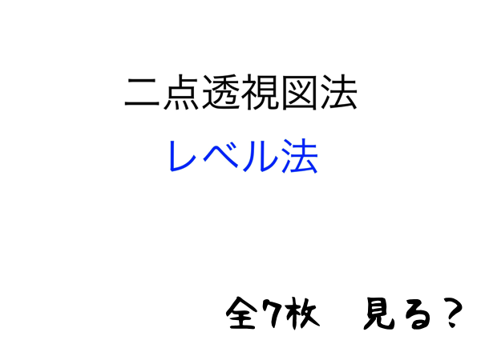
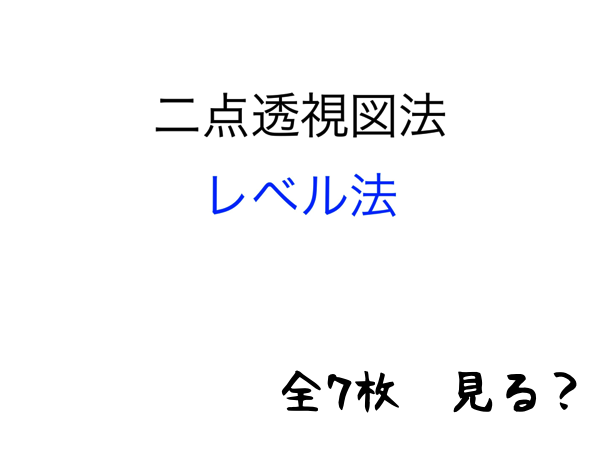

 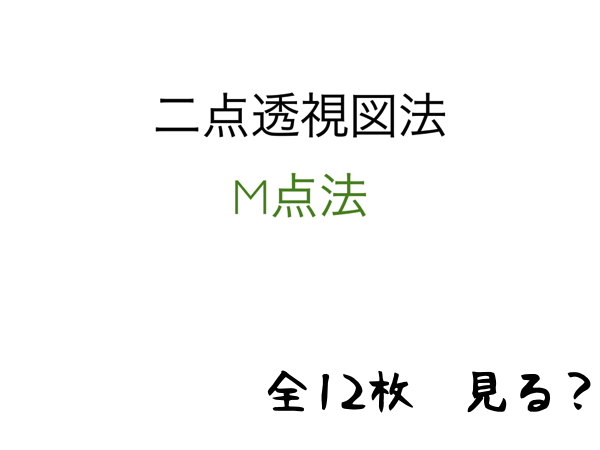
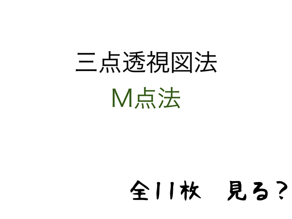
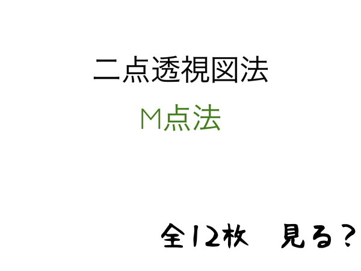
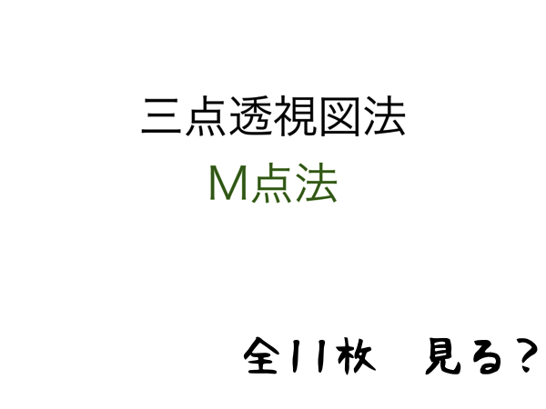
パース法の基礎理論、熟考
ここで一旦、解釈の仕方に齟齬が生じてしまわないように、用語の使い方や意味を明確に定義しておこうと思います。ここに書かれていることは、この記事を書くにあたって、抽象的で分かりにくい建築パースの用語の意味やそれらの相互関係をいかにして言葉で表すか、体系的にまとめ上げるかを考える過程で閃いたものです。結構参考になると思うのでどうぞご覧あれ。下の2つの表のうち、一つ目の表は言葉遣いの定義について、同じ意味として使ってしまいがちなものを対比してわかりやすくしておきます。そして2つ目の表は用語の定義について、主に作図するときに出て来る部分名称の正式名称と表記名、そして簡単にそれらの相互関係の考え方を述べています。
| 定義 |
内容 |
| 奥行きの縮小と奥行きの圧縮の違いについて |
奥行きの縮小とは、遠くにあるものほど小さくなるということ。奥行きの圧縮とは、視円錐の中心に近いほど奥行きが短く描かれるということ。つまり、奥行きの縮小の比率が小さくなることを奥行きの圧縮という。 |
| 地平線と水平線の違いについて |
地平線とは、遥か遠方に見える地の果てのこと。水平線とは、水平方向に描かれた直線のこと。前者は固有の名称として使い、後者は作図の際に水平方向に描いた線のことを指す。 |
| 建築パースでのPPとELとHLの違いについて |
建築パースではPPとELとHLは同じ一本の直線として描かれているが、作図するときの基準線として使用するのはELとなる。HLは常にELと一致するわけではないので基準線としては使えない。PPはあくまで「パースが適用された実際の見え方のする像が映る面」という概念として扱い、実際にそこにあるわけではないため基準線としては使えない。 |
言葉遣いの定義
| 名称 |
考え方 |
| 画面PP(Picture Plane) |
実際に絵に描いたときと同じ見え方のする部分。視円錐の底面に該当する。 |
| アイレベルEL(Eye Level) |
視線方向の無限の遠方にある、パース線が収束する水平線のこと。視円錐の底面の中央を横切る。これの高さによって垂直方向の見える範囲のアングルが決まる。ちなみに、厳密にいうとELとは線ではなく、目の高さから無限遠に水平に広がる平面という考え方になるが、必要なのは「遥か遠方に見える直線」という性質だけである。 |
| 地平線HL(Horizontal Line) |
風景の中の水平線のこと。地面に平行に置かれている物の消失点はHLに一致する。 |
| 基線GL(Ground Line) |
作画する際に便宜上の基準として、立体ごとに描く水平線のこと。GL上はパースのついていない原寸の長さを描く事ができる。M点法などで立方体の一辺の原寸を知りたいときは、GLの上に辺の原寸を描く事がある。GLの幅を基準にして描いた視円錐が、本来の視円錐に対してどれ位の大きさでどの位置にあるかで、描く立体の画角が決定される。 |
| 消失点VP(Vanishing Point) |
視円錐の底面の中央を横切るEL上にある。一点透視図法では底面の中心にある。二点透視図法では底面の両端にある。三点透視図法では底面の両端と、視線と同一線上のSPよりELから遠い点（上下の二通りがある）にある。ここでいうVPは視界を基準にしたときの消失点のことであり、立体の消失点は立体の置き方次第で変化するので除外する。 |
| 対角線の消失点DVP(Diagonal Vanishing Point) |
VPに向かう線に対して45°方向にある消失点のこと。正方形の対角線は45°であるという法則を利用して正方形を作図するときに利用する。正方形の一辺の正確な寸法は基準がなければ作図できない。 |
| 測定点MP(Measuring Point) |
奥行きの縮小がなされた寸法を作図するために利用する基準点。SPから各VPまでの距離を半径とし、また各VPを中心点とする円の円周とELの交点が、そのVPの専用のMPとなる。二つのVP、もしくはSPと一つのVPの位置が決まるとMPの位置も決まる。 |
| 介線ML(Medium Line) |
立方体の側面方向の対角線の消失線のこと。作図する際にはMPなどといった奥行きを測れる基準がないと、正方形の一辺の寸法を正確に作図できる角度を求められない。二本のうちどちらか片方の角度が決まれば、それを利用してもう片方も作図で求められる。 |
| 介線の消失点MLVP(ML Vanishing Point) |
立方体の側面方向の対角線の消失点のこと。視心に向かって縮小しても位置関係は保たれるため、VPが画面外にあるときにあえて縮小して、画面内だけで作図を行うことができる。 |
| 視円錐 |
視心が中心軸になる。頂点角の大きさは画角を、円錐の高さはSPからPPまでの距離を表す。また、視円錐の底面はPPに該当するが、それぞれ形状が円と四角形となっている。これは本来放射状に広がる視界を、便宜的に四角い絵という形式に当てはめたためである。 |
| 視心 |
視円錐の中心軸のこと。 |
| 視点（立点）SP(Standing Point) |
視円錐の頂点に該当する。作図するときは視円錐の底面の円周上のどこかに位置する。SPの位置によって水平方向の見える範囲のアングルが決まる。 |
| 視線 |
SPから任意の点に向かう直線のこと。 |
| 視界 |
視円錐の底面に該当する。つまりPPに同じ。 |
用語の表記と考え方
言葉遣いの定義の表の中でPPは概念だ書きましたが、それについてもう少し具体的に説明します。下図は、パース法の歴史上ではPPが概念としてでなく、物理的に存在していたということを示す資料です。何の図かというと、グリッドの張られた枠（PP）越しに裸婦をデッサンしている様子です。この図で考えると、PPの位置が前後すると映る像が変化することが想像できます。また、建築パースでPPがEL（HL）と同一の直線として描かれているのは、作画の利便性の都合によってそうなっているだけであり、本来は全く異なる位置にあるということも分かります。分かりやすく言うと、EL（HL）は無限の遠方にあるのに対し、PPはSPとEL（HL）の間の全ての領域について適用できる概念ということになります。例えば、屋内のシーンを望遠レンズで遠くの屋外から撮影したような絵が描けるのは、屋外のSPと屋内とを隔てる家の壁の存在を無視して、丁度室内に位置するようにPPを移動しているからです。このようにPPが概念であるからこそ描ける絵もあるということです。
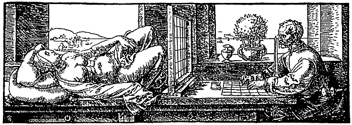
ちなみに、視円錐の底面もPPと同じように扱われていますが、これは視円錐の内部空間の風景をSPの位置から底面に向かって投影すれば、PPに映るものと同じような像ができあがるからです。むしろこちらの考え方の方が分かりやすいかもしれません。実際に見える像をMRIスキャン画像に例えると、PPは断面をスキャンするためのユニットで、それによって視円錐のSPから底面までの間の断面をスキャンし、スキャン画像を視円錐の底面のサイズに統一するように拡大縮小し、それをレイヤーとして正しい順に重ねて、それが視円錐の底面に表示されている、というように考える事も出来ます。
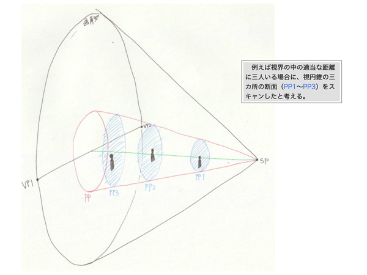
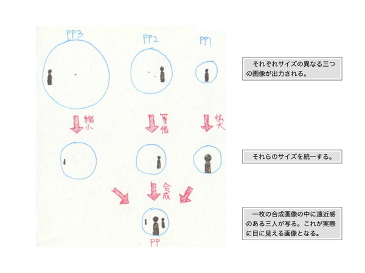
余談として、パース法の講座によく書かれていることですが、「アイレベルELと水平線HLは同じ」というのを見たことあると思います。しかし、そのことが正しいのはある唯一の状況のみです。それは、垂直に立った人が無意識に真っすぐ前を見た場合です。もしもその人が少しでも下を見たり、空を仰いだり、首を傾げると、その人のELとHLは一致しなくなります。ですがごく普通の風景を描くというのならELとHLは同じ物と考えても問題ありません。ただ、それは人間の心理が補正をかけているということを念頭に置いておくといいと思います。考えてもみて下さい、遥か地平線の地表から自分の身長分くらいの高さの一点を見つめられる程の視力と集中力を持った人間が存在するでしょうか。
お絵描きパースの作画の考え方 〜グリッドについて
ここまでは主にパース理論の考え方について書いてきました。おそらくそれだけでデッサンに応用できる人はあまりいないでしょう。できたとしても、手法として単純な消失点法くらいしか使い道が分からないと思います。その原因は、この記事で説明した作図方法が全て一つの正方形もしくは立方体をターゲットとしているものだからです。通常、描こうとしている絵の中には複数の立体があることが多いですし、それらが全て同じ消失点に収束しているとは限りません。すると、それら一つ一つに対してパースを作画しなくてはならないと思ってしまうからです。確かにこの記事の説明は一つの立体を描くときに利用しますが、もっと効率的な使い方があります。それは、初めに全体のパースに沿ったグリッドを描いてしまうという方法です。
Pixivのイラストメイキングなどでよく見かけますが、下描き段階で画面全体に水色のパース線が張り巡らされていたりするのがグリッドです。人によっては目測で描いているかもしれませんが、このグリッドを正確に描くには、この記事で説明した「一つの立体をターゲットにした作画法」の「一つ」を「グリッド」に適用すればいいのです。先にグリッドさえ描いていれば、その後はグリッドに沿って手描きで立体を配置していくだけでいいというわけです。
また、初めに描いておいたグリッドと異なるパースをもつ立体を描くことも簡単になります。グリッドを描き終わっているということは消失点やアイレベルは既に決まっているはずです。そこで、描こうとしている立体のパースが傾いている分だけ、その立体の消失点を上下左右にズラすだけでことは済みます。そのズラす量については作画が必要ですが、ここまでの知識を応用すればなんてことありませんたぶん。
グリッドを作画するにあたって、ここまでに学んだ事をどのように生かすかを確認しておきます。下の表は四つ作図法をグリッドの作図で使用するときのそれぞれの役割と相性をまとめたものです。正確な寸法で作図したいときはM点法を使う必要がありますが、絵を描くという目的ではそこまで正確に描く必要はないかもしれません。すると、まず初めに目測でラフ画を描いておいて、そのラフ画に近くなるようにパースを取れば問題ありません。そのとき活躍するのが、位置関係を縮小することのできる介線法です。下図は、大まかな立方体を目測で描いて、その立方体の側面を使って介線を描くという方針でグリッドを作図しています。それでは、画面内に消失点が見えていない場合に有効な介線法を使ってグリッドを描いてみようと思います。
|
消失点法 |
対角消失点法 |
M点法 |
介線法 |
| 特徴 |
パース線の方向のみが決まる。グリッドの目盛りの間隔は描けない。 |
水平グリッドの正方形の対角線を描ける。 |
グリッドの目盛りの間隔を正確に描きたいときに有効。ちなみに垂直方向の目盛り間隔については、一点、二点透視図の場合は原寸となる部分にそのまま描けるが、三点透視図法の場合はM点法を応用して描く必要がある。 |
垂直グリッドの正方形の対角線を描ける。 |
グリッド作画と各作画法の相性

以上がパース法の基礎理論について勉強した結果です。かなりの広範囲にわたって調べてまとめようとしたので長文となってしまいましたが、これで基礎は一通り押さえられたと思います。ただ、理論を体系的に理解しようという試みだったので、この時点ではまだ絵を描くという点では実用的ではないかもしれません。次の記事では、ここで学んだ基礎理論を応用して絵を描こうとしたとき、どの技法をどれくらい取り入れてパースをとればいいのかについて考えていきます。と、言いたいところですが、ここまでパース法の理論を勉強して思ったのは、やっぱり絵を描くのにこんなにガチガチの理論は邪魔なのではないかということです。次の記事ではガチガチ理論も役に立つという結果が得られることを願っています...。